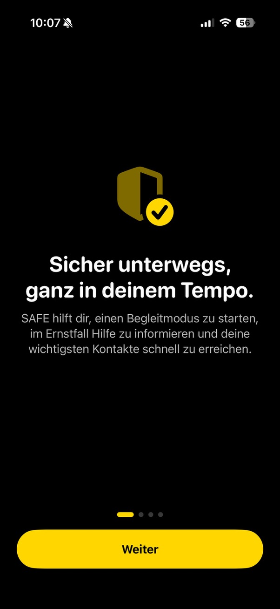
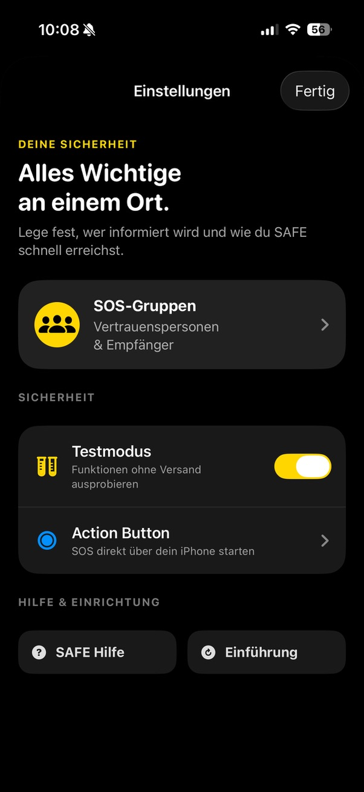
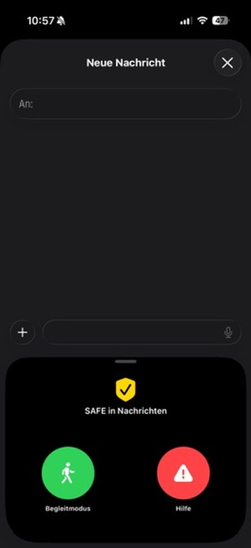
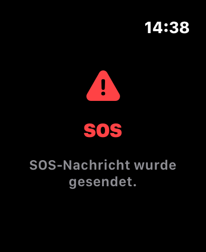

FUNKTIONEN
Alles, was SAFE
für dich bereithält.
Von der Einrichtung bis zur schnellen Hilfe: Hier siehst du, wie SAFE dich unterwegs unterstützt – klar, bewusst und in deinem Tempo.
BEGLEITMODUS
Sicher unterwegs, ohne Zeitdruck.
Starte einen Begleitmodus für deinen gesamten Weg oder wähle eine passende Dauer. SAFE zeigt dir jederzeit, ob dein Modus aktiv ist.
Wenn dein gewählter Zeitraum endet, erinnert SAFE dich daran, zu bestätigen, dass alles in Ordnung ist.

EINFACH EINRICHTEN
Gut vorbereitet, bevor du losgehst.
Beim ersten Start führt SAFE dich Schritt für Schritt durch die wichtigsten Funktionen und erklärt verständlich, welche Berechtigungen wofür nötig sind.
So kannst du Standort, Mitteilungen und deine Vertrauenspersonen bewusst einrichten.

SOS & VERTRAUENSPERSONEN
Hilfe schnell vorbereiten.
Lege deine SOS-Gruppen und Vertrauenspersonen selbst fest. Im Ernstfall bereitet SAFE eine Nachricht mit deinem aktuellen Standort vor.
Du behältst die Kontrolle: Eine Nachricht wird erst in der Nachrichten-App nach deiner bewussten Bestätigung gesendet.

SAFE IN NACHRICHTEN
Direkt in iMessage erreichbar.
Öffne SAFE direkt in Nachrichten und bereite dort eine Begleitmodus- oder Hilfenachricht inklusive Standort vor.
Der Standort wird als Apple-Karten-Vorschau dargestellt. Auch hier entscheidest du vor dem Versand selbst.

SCHNELLZUGRIFF
Sichtbar und schnell erreichbar.
Mit Widgets und der Sperrbildschirm-Ansicht siehst du deinen SAFE-Status schnell. Über den Action Button kannst du SOS besonders direkt vorbereiten.
SAFE stellt dafür einen geführten Ablauf bereit, der dich bei der Einrichtung unterstützt.

APPLE WATCH
SAFE auch am Handgelenk.
Auf der Apple Watch hast du den SAFE-Status im Blick und kannst die wichtigsten Aktionen direkt am Handgelenk starten.
Die Watch arbeitet dabei mit deinem iPhone zusammen, damit deine eingestellten Kontakte und Gruppen verwendet werden.
